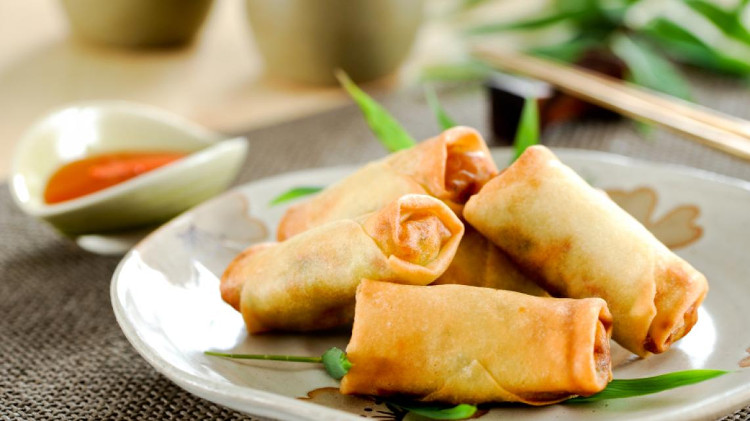
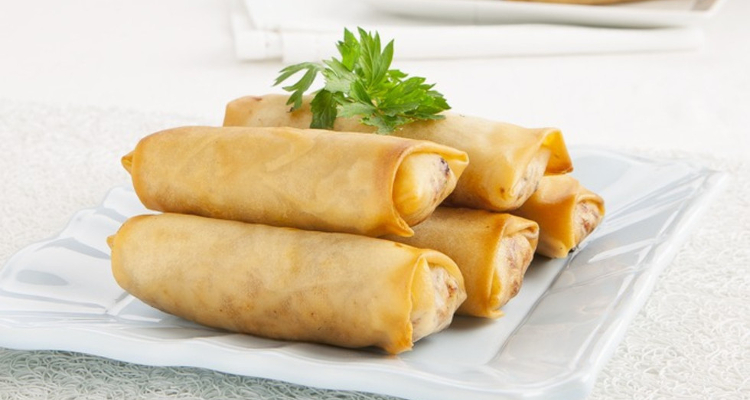
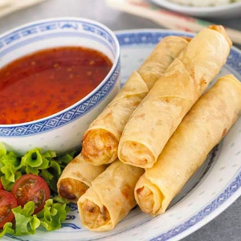
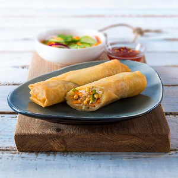
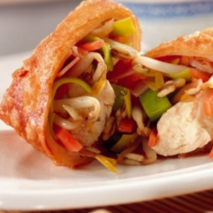

Loempia
Recept
De loempia wordt gemaakt van een vierkante deeglap van eieren en tarwemeel die men vaak vult met varkensvlees, uien, garnalen, bamboescheuten of taugé, paddenstoelen, bieslook en soms waterkastanjes. De farce wordt met ei, sojasaus, gember, peper en rijstwijn gebonden. De rolletjes worden gefrituurd en gegeten met een sojasaus met knoflook en citroensap. Men geeft er blaadjes sla, rauwe taugé, muntblaadjes, peterselie of koriander bij.Ingredienten
- 150 gr tofu
- 150 gr gerookte kip
- 250 gr nasi/bamigroente pakket
- 2 knoflookteentjes, fijn gehakt
- 1 ui, gesnipperd
- 1 snufje ketoembar (korianderzaad)
- 1 snufje laos
- 1 snufje gemberpoeder
- 1,5 eetl ketjap manis
- 1 theel pittige saus of ½ lombok (rode peper)
- 10 loempiavellen, ontdooid
- 2 eieren
- 1 eetl bloem
- Klontje boter
- Peper en zout
- Olie om te frituren
Bereidingswijze
Splits een ei en bewaar het eiwit. Klop de eidooier samen met het andere heel ei door elkaar. Breng op smaak met wat peper en zout. Verhit de boter in de pan en bak het ei 3 minuten aan beide zijdes. Bewaar de omelet op een bordje.Fruit de knoflook en de ui aan in dezelfde pan. Snijd de tofu en de kip in kleine blokjes en voeg toe. Roer na ongeveer 3 minuten de nasi/bami groente er door en breng op smaak met de ketoembar, laos, gember, ketjap en pittige saus of rode peper. Bak alles al omscheppend 10 minuten op een matig vuur. Snijd de omelet in smalle reepjes en voeg toe aan de pan met de vulling.
Maak ondertussen een papje van het eiwit, bloem en 1 etl water. Schep in het midden van elk loempiablad 2 grote eetlepels vulling. Bestrijk de randen met het witte papje en vouw als een pakketje goed dicht. Verhit de olie naar 175 graden en frituur de loempia’s ca 4 minuten totdat ze licht bruin en krokant zijn. Lekker met een kommetje rijst en sate of sambal ketjapsaus. Voor een vegaetarische variant gebruik je 300 gr tofu en laat je de kip achterwege.
bron




